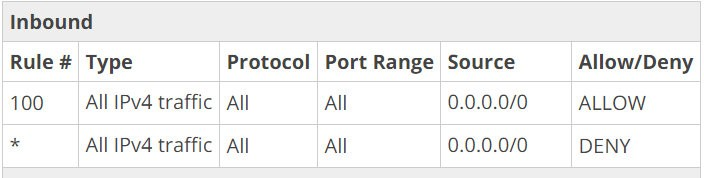

-

Attempt
59 -

Marks Obtained
4 / 35 -

Your score
11.43% -

Time Taken
00 H 24 M 25 S -

Result
Failed
| No | Domain | Total Question | Correct | Incorrect | Unattempted | Marked as Review |
|---|---|---|---|---|---|---|
|
|
|
|
|
|
|
|
|
|
|
|
|
|
|
|
|
|
|
|
|
|
|
|
You are working as an architect in your organization. You have peered VPC A as requester and VPC B as accepter and both VPCs can communicate with each other. Now you want resources in both the VPCs to reach out to the internet but anyone on the internet should not be able to reach resources within both the VPCs. Which of the below will achieve the desired outcome?
Correct Answer: C
- Option A is INCORRECT because you can't share NAT gateways across VPCs.
- Option B is INCORRECT because attaching an IGW to a VPC allows instances with public IPs to access the internet, while NATs allow instances with no public IPs to access the internet.
- Option C is CORRECT because you can create NAT Gateways on both VPC's and configure routes to the NAT Gateways in the respective route tables.
- Option D is INCORRECT because a stand-alone NAT Instance in VPC A doesn't accomplish anything.
- For more information:
Your organization already had a VPC(10.10.0.0/16) setup with one public(10.10.1.0/24) and two private subnets – private subnet 1 (10.10.2.0/24) and private subnet 2 (10.10.3.0/24). The public subnet has the main route table and two private subnets have two different route tables respectively. AWS sysops team reports a problem starting the EC2 instance in private subnet 1 cannot communicate to the RDS MySQL database which is on private subnet 2. What are the possible reasons? (choose 2 options)
Correct Answer: B, C
- For Option A, for any route table, the local route cannot be edited or deleted.
AWS Docs says:
"Every route table contains a local route for communication within the VPC over IPv4. If your VPC has more than one IPv4 CIDR block, your route tables contain a local route for each IPv4 CIDR block. If you've associated an IPv6 CIDR block with your VPC, your route tables contain a local route for the IPv6 CIDR block. You cannot modify or delete these routes."
- For Option B, possible because the security group is configured with public subnet IP range instead of private subnet 1 IP range and EC2 is in private subnet 1. So EC2 will not be able to communicate with RDS in private subnet 2.
- Option C is correct.

- Option D is not correct because Security Groups are stateful - if you send a request from your instance, the response traffic for that request is allowed to flow in regardless of inbound security group rules. Responses to allowed inbound traffic are allowed to flow out, regardless of outbound rules.
A new VPC with CIDR range 10.10.0.0/16 has been setup with a public and a private subnet. Internet Gateway and a custom route table have been created and a route has been added with the 'Destination' as '0.0.0.0/0' and the 'Target' with Internet Gateway ( igw-id ). A new Linux EC2 instance has been launched on the public subnet with the auto-assign public IP option enabled, but when trying to SSH into the machine, the connection is getting failed. What could be the reason?
Answer: B
- Option A, An Elastic IP address is a public IPv4 address with which you can mask the failure of an instance or software by rapidly remapping the address to another instance in your account.
If your instance does not have a public IPv4 address, you can associate an Elastic IP address with your instance to enable communication with the internet; for example, to connect to your instance from your local computer.
From our problem statement, EC2 is launched with Auto-assign public IP enabled. So, since public IP is available, Elastic IP is not a necesity to connect from internet.
- Option C, the problem statement clearly states that EC2 is launched with Auto-assign Public IP enabled, so this option cannot be true.
- Option B, whenever a subnet is created by default, it is associated with the main route table. We need to explicitly associate the subnet to the custom route table if different routes are required for main and custom route tables
You are an architect in your organization. Your organization would want to upload files to AWS S3 bucket privately through AWS VPC. In an existing VPC, you created a subnet and VPC endpoint for S3. You also created one route table which routes the traffic from the subnet to a NAT gateway and also the traffic to S3 through the internet via the NAT gateway. But in AWS S3 server logs, you noticed that the request to S3 bucket from an EC2 instance is not coming via the Internet through the NAT Gateway. What could be causing this situation?
Answer: C
- Option A, the opposite is true. VPC Endpoint always takes precedence over NAT Gateway or Internet Gateway. In the absence of VPC endpoint, requests to S3 are routed to NAT Gateway or Internet Gateway based on their existence in route table.
- Option B, the elastic IP address is IPv4 public address with which you can mask the failure of an instance or software by rapidly remapping the address to another instance in your account.
Elastic Ips are not used for routing requests from an EC2 instance.
- Option C, A NAT gateway cannot send traffic over VPC endpoints, AWS Site-to-Site VPN connections, AWS Direct Connect, or VPC peering connections. If your instances in the private subnet must access resources over a VPC endpoint, a Site-to-Site VPN connection, or AWS Direct Connect, use the private subnet’s route table to route the traffic directly to these devices and also add a route to the S3 VPC Endpoint.
- Please refer to the following link
- Option D is false. VPC Endpoint helps to route traffic internally within AWS network without the need to go over through internet. This makes your S3 bucket private to your network. For more information, refer VPC endpoint documentation
Note:
As per AWS,
S3 VPC endpoints doesn't support cross region requests.
When you create a VPC endpoint for Amazon S3, any requests to an Amazon S3 endpoint within the Region (for example, s3.us-west-2.amazonaws.com) are routed to a private Amazon S3 endpoint within the Amazon network. You don't need to modify your applications running on EC2 instances in your VPC—the endpoint name remains the same, but the route to Amazon S3 stays entirely within the Amazon network, and does not access the public internet.
- For more information please refer:
Your organization has an existing VPC with an AWS S3 VPC endpoint created and serving certain S3 buckets. You were asked to create a new S3 bucket and reuse the existing VPC endpoint to route requests to the new S3 bucket. However, after creating a new S3 bucket and sending requests from an EC2 instance via VPC endpoint, you found the requests are failing with the “Access Denied” error. What could be the issue? (select 2 options)
Answer: A, B
- Option A is correct, VPC endpoint has a policy which by default allows all actions on all S3 buckets. We can restrict access to certain S3 buckets and certain actions on this policy. In such cases, for accessing any new buckets or for any new actions, the VPC endpoint policy needs to be modified accordingly.
- Option B is correct, AWS IAM role/user which is used to access S3 bucket needs to have access granted via IAM policy before accessing. So if the IAM role/user is not an administrator or not having full S3 access, a newly created S3 bucket must be added to the IAM policy.
- Option C is incorrect, by default, there is no resource policy on the S3 bucket. If we would like to make the bucket private, we can add a new resource policy with “Deny”. Please see the documentation for more information
- Option D is incorrect, You can have multiple endpoint routes to different services in a route table, and you can have multiple endpoint routes to the same service in different route tables, but you cannot have multiple endpoints to the same service in a single route table. For example, if you have two endpoints to Amazon S3 in your VPC, you cannot use the same route table for both endpoints.
A company has defined following Network ACL rules and deployed in a subnet of a VPC which is associated with a route table which has an Internet Gateway.
Inbound Rules:
|
Rule # |
Type |
Protocol Port Range |
Source |
Allow / Deny |
|
100 |
ALL Traffic |
ALL ALL |
0.0.0.0/0 |
ALLOW |
|
200 |
SSH (22) |
TCP (6) 22 |
0.0.0.0/0 |
DENY |
|
* |
ALL Traffic |
ALL ALL |
0.0.0.0/0 |
DENY |
Outbound rules:
|
Rule# |
Type |
Protocol |
Port range |
Destination |
Allow / Deny |
|
100 |
SSH (22) |
TCP (6) |
22 |
0.0.0.0/0 |
ALLOW |
|
200 |
ALL Traffic |
ALL |
ALL |
0.0.0.0/0 |
DENY |
|
* |
ALL Traffic |
ALL |
ALL |
0.0.0.0/0 |
DENY |
What would be the outcome when an user tries to access via SSH to an EC2 instance launched into this public subnet from his corporate network?
Answer - C
Option C is correct because Incoming SSH traffic is allowed because inbound rule # 100 (200 is practically ignored) and outbound rule not matching already established SSH connection.
Network ACLs are stateless, which means that responses to allowed inbound traffic are subject to the rules for outbound traffic (and vice versa).
Security Group is stateful means for every incoming traffic if Inbound is allowed then outbound rule for that traffic is optional.
Here in the question incoming traffic rule # 100 will allow All Traffic to reach the EC2.
On the inbound rules:
Rule 100: First note that the rules are usually evaluated in a numbered list. Starting from the lowest numbered rule.and from the inbound rules, rule 100 will be evaluated is the first rule.
This rule should have a matching outbound rule for it.
Rule 100 will allow all traffic since the inbound rule has to match the outbound rule(rule 200).
In the inbound rule, since all traffic is allowed including SSH, and as stated in AWS documentation that once the rule is evaluated, matching rule after that will be ignored which means Inbound Rule #200 is ignored as SSH is Captured in All Traffic
Traffic will succeed because of inbound rule# 100 & outbound rule# 200 will match.
Rest all Options are incorrect as per rules.
Refer: https://docs.aws.amazon.com/vpc/latest/userguide/vpc-network-acls.html#Rules
Your organization was looking to download patches onto an existing EC2 instance which is inside a private subnet in existing custom VPC. You created a NAT Gateway and added a route to the routing table. However, when you are trying to download patches from the internet onto EC2 instance, connection getting timed out. What could be the reason? (choose 2 options)
Answer A and C
For Option A, when creating NAT Gateway, there is an option to select a subnet in which NAT Gateway will be created. This must be a public subnet that has a route to the internet through Internet Gateway.
If a private subnet is selected when creating NAT Gateway, it cannot route traffic to the internet and hence the requests would fail.
For Option B, NAT Gateway cannot be created without an elastic IP address. During the creation of NAT Gateway, Elastic IP Allocation ID is a mandatory field without which we cannot proceed to create NAT Gateway. So this option is incorrect.
For Option C, there might be a chance you have provided EIP which is not associated with your instance.
For Option D, NAT Gateways does not have security groups.
- https://docs.aws.amazon.com/AmazonVPC/latest/UserGuide/vpc-nat-gateway.html#nat- gateway-basics
- https://docs.aws.amazon.com/AmazonVPC/latest/UserGuide/vpc-nat-gateway.html
As per AWS documentation,
Instances in Private Subnet Cannot Access internet
- Check that the NAT gateway is in the Available state. In the Amazon VPC console, go to the NAT Gateways page and view the status information in the details pane. If the NAT gateway is in a failed state, there may have been an error when it was created.
- Check that you've configured your route tables correctly:
- The NAT gateway must be in a public subnet with a routing table that routes internet traffic to an internet gateway.
- Your instance must be in a private subnet with a routing table that routes internet traffic to the NAT gateway.
- Check that there are no other route table entries that route all or part of the internet traffic to another device instead of the NAT gateway.
The NAT gateway itself allows all outbound traffic and traffic received in response to an outbound request (it is therefore stateful).
Please refer to the following links for more information.
Your organization is
planning to develop a web application containing a Web Server and an RDS
Instance. This application will be accessed from internet. Your organization
asked you to architect the solution on AWS. Your existing AWS environment
already has a VPC with a private subnet and public subnet which has a route to
internet through Internet Gateway. What would be the best and cost effective
solution you would provide?
Answer: D
For option A, EC2 instance in private subnet cannot be reached from internet. A bastion host is a server whose purpose is to provide access to a private network from an external network, such as the Internet. It does not act as a proxy to route traffic from internet to private EC2 instance.
AWS Document says:
The solution architecture
In this section, I present the architecture of this solution and explain how you can configure the bastion host to record SSH sessions. Later in this post, I provide instructions about how to implement and test the solution.
Amazon VPC enables you to launch AWS resources on a virtual private network that you have defined. The bastion host runs on an Amazon EC2 instance that is typically in a public subnet of your Amazon VPC. Linux instances are in a subnet that is not publicly accessible, and they are set up with a security group that allows SSH access from the security group attached to the underlying EC2 instance running the bastion host. Bastion host users connect to the bastion host to connect to the Linux instances, as illustrated in the following diagram.
Option B, with EC2 instance in public subnet and Elastic IP attached, traffic from internet can reach Web Server and application works well. Although this option looks correct, this is not cost effective since there is no use of Bastion host anywhere since the EC2 instance is already in public subnet.
Option C, Same as option A. Although we have NAT Gateway attached to the subnet where Web Server EC2 resides, still the traffic from internet cannot reach the EC2 and NAT Gateway only routes traffic from AWS resources within a VPC to internet. Any traffic from internet into VPC resources is not allowed by NAT Gateway.
Option D, The Web Server EC2 instance is in public subnet with elastic IP address attached to it and RDS in private subnet which cannot be reached from internet but only can allow traffic from EC2 in public subnet via security groups. From given answers, this looks correct in terms of cost and effectiveness.
- For more information on Elastic IP address, please refer documentation. https://docs.aws.amazon.com/AWSEC2/latest/UserGuide/elastic-ip-addresses-eip.html
You are building a fleet of EC2 Linux Instances in the AWS environment for managing heavy workloads and writing data into AWS Redshift. The developers and administrators need to login to these EC2 machines to develop, fix, deploy, and manage workloads within your organizational network. Which of the following would allow only the personnel within the organization to access the resources in the most secure way?
Answer: C
- For Option A, this is not secure because EC2 instances are in public subnet and are open to attacks such as DDoS. If you do not have a requirement to be accessed from the internet, as a security best practice, try not to put AWS resources in public subnet.
- For more information on DDoS attacks, refer documentation here
- For Option B, Although EC2 instances are secured by putting them on private subnet and only enabling bastion host on public subnet looks correct, the requirement states, these instances should only be accessed via their organization network. So this option is incorrect.
A bastion host is a server whose purpose is to provide access to a private network from an external network, such as the Internet. It does not act as a proxy to route traffic from internet to private EC2 instance.
AWS Document says:
The solution architecture
In this section, I present the architecture of this solution and explain how you can configure the bastion host to record SSH sessions. Later in this post, I provide instructions about how to implement and test the solution.
Amazon VPC enables you to launch AWS resources on a virtual private network that you have defined. The bastion host runs on an Amazon EC2 instance that is typically in a public subnet of your Amazon VPC. Linux instances are in a subnet that is not publicly accessible, and they are set up with a security group that allows SSH access from the security group attached to the underlying EC2 instance running the bastion host. Bastion host users connect to the bastion host to connect to the Linux instances, as illustrated in the following diagram.

For Option C, VPN connections are used to connect AWS VPC from your organization’s network. By default, instances that you launch into an Amazon VPC can't communicate with your own (remote) network. You can enable access to your remote network from your VPC by attaching a virtual private gateway to the VPC, creating a custom route table, updating your security group rules, and creating an AWS managed VPN connection.
For more information on VPN, refer documentation here.
So, in this option, even from a VPN connection, only bastion host is exposed from AWS to VPN and you only open one connection from your organization to AWS. From bastion host, you can open connections to other resources in private subnet or other resources in peering VPCs.
Option D is INCORRECT because Redshift needs to be placed in the "private" subnet and not in the "public" subnet"
Note:
In the question, they mentioned that "Developers and Administrators need the login to the EC2 instances Only within your organization network." So, they should access via their organization network.
Establish a VPN connection between your Organization network and your AWS.
You have a bastion host EC2 instance on AWS VPC public subnet. You would want to SSH to Bastion host EC2 instance. What would be the secure and minimal configuration you need inorder for SSH request to work? Assume route table is already setup with Internet Gateway.
Answer D
Security groups are stateful — if you send a request from your instance, the response traffic for that request is allowed to flow in regardless of inbound security group rules.
Responses to allowed inbound traffic are allowed to flow out, regardless of outbound rules.
Network ACLs are stateless; responses to allowed inbound traffic are subject to the rules for outbound traffic (and vice versa).
- In option A, Security Group outbound is not necessary for SSH connection to work. Also, opening to 0.0.0.0/0 is insecure as it allows ALL on SSH. Although this option works, this is not secure and not a minimal configuration.
- In options B and C, Network ACL outbound is not open. According to Network ACL stateless definition, this option would fail.
- In option D, this is minimal and secure configuration to open only to your IP address. This is correct answer.
You have following Network ACL and Security Group rules. What would happen to an SSH request sent from 10.10.1.148 IP address to an EC2 instance with below security group and exists inside a subnet with below NACL rules?
Network ACL Inbound
Network ACL Outbound
Security Group Inbound
Security Group Outbound
Answer: A
Security groups are stateful — if you send a request from your instance, the response traffic for that request is allowed to flow in regardless of inbound security group rules. Responses to allowed inbound traffic are allowed to flow out, regardless of outbound rules.
Network ACLs are stateless; responses to allowed inbound traffic are subject to the rules for outbound traffic (and vice versa).
A network ACL contains a numbered list of rules that we evaluate in order, starting with the lowest numbered rule, to determine whether traffic is allowed in or out of any subnet associated with the network ACL.
Rules are evaluated starting with the lowest numbered rule. As soon as a rule matches traffic, it's applied regardless of any higher-numbered rule that may contradict it.
For Option A, rule # 100 allows all traffic. So this will allow SSH request irrespective of other higher numbered rules. Security group rule allows SSH traffic for IP Range 10.10.1.0/24. IP address 10.10.1.148 falls under this IP range, so it allows SSH request. Network ACL outbound rule # 100 allows ALL traffic. So the request would succeed. This option is correct.
For Option B, when SSH request is made, rule # 300 is never evaluated because the request succeeds during rule # 100 evaluation. However, Rule # 300 gets evaluated when a non-SSH request is made. But, for this question, it is incorrect answer.
For Option C, rule # 200 is never evaluated because the request succeeds during rule # 100 evaluation. So this option is incorrect.
For option D, Security Groups are stateful. So, for an SSH request inbound to EC2 instance, security group outbound does not have an impact. So this option is incorrect.
Following are network ACL rules for a subnet. Which of the following statements are correct when web request is originating from 10.10.1.148 IP address?
Inbound rules
Outbound Rules
Answer - D
Network ACLs are stateless; responses to allowed inbound traffic are subject to the rules for outbound traffic (and vice versa).
A network ACL contains a numbered list of rules that we evaluate in order, starting with the lowest numbered rule, to determine whether traffic is allowed in or out of any subnet associated with the network ACL.
Rules are evaluated starting with the lowest numbered rule. As soon as a rule matches traffic, it's applied regardless of any higher-numbered rule that may contradict it.
For the given rules in the question, the outbound rule * denies all the traffic outgoing except for 22 and 80.
For more inför nation, please check below AWS Docs:
The question specifically states the traffic coming in from 10.10.1.148
Note:
Please note that since it is a web request we need to look for an HTTPS on port 443 for Inbound.
- Option B is INCORRECT because it states SSH(22) request would succeed but the Inbound rule has a DENY for it.
- Option C is INCORRECT because it states HTTP(80) request would not succeed
- Therefore Option D is the correct answer
D. None of the above
You have data residing on your organization's network that needs to be migrated. Your organization's network is connected to an AWS VPC through VPN. The VPC contains an S3 VPC Gateway Endpoint created to access S3 through AWS internal network. As an architect, you were asked to transfer the data to S3 without using the internet due to security compliances. What is the best possible way to achieve this?
Correct Answer: A
VPC Gateway endpoints are not supported outside VPC.
Endpoint connections cannot be extended out of a VPC. Resources on the other side of a VPN connection, VPC peering connection, AWS Direct Connect connection, or ClassicLink connection in your VPC cannot use the endpoint to communicate with resources in the endpoint service.
So, to support such use cases, we can setup an S3 proxy server on AWS EC2 instance as shown below.
Option B is not correct because VPC Gateway endpoints are not supported outside VPC. Option C, there is no AWS service called as VPN Gateway endpoint.
Option D, is not correct because VPC Gateway endpoints are not supported outside VPC and a route for VPC gateway endpoint cannot be added through route table. It can only be added by editing VPC gateway endpoint.
For more information on setting up S3 proxy, refer documentation here.
You have an existing VPC in us-east-1. You have created a VPC Endpoint for S3 and added it to the main route table. You have launched an EC2 instance inside a subnet that is associated with the main route table. From the new EC2 instance, when making a request to the S3 bucket within us-east-1, you noticed that the connection is failing. What could be the reason. ( Choose 2 options)
Answer : A and C
- For option A, By default, Amazon VPC security groups allow all outbound traffic, unless you've specifically restricted outbound access.
For a gateway endpoint, if your security group's outbound rules are restricted, you must add a rule that allows outbound traffic from your VPC to the service that's specified in your endpoint. To do this, you can use the service's prefix list ID as the destination in the outbound rule.
So this option is correct.
- For option B, when using VPC endpoint for S3, internet gateway is not required to route traffic to S3. VPC endpoint routes traffic internally within AWS without going out to internet.
So this option is incorrect.
- For Option C, The default network ACL is configured to allow all traffic to flow in and out of the subnets with which it is associated. If your network ACL rules restrict traffic you must specify the CIDR block ( IP address range ) for Amazon S3. So this option is correct.
- For option D, when using VPC endpoint for S3, NAT gateway is not required to route traffic to S3. VPC endpoint routes traffic internally within AWS without going out to the internet. So this option is incorrect.
Your organization had asked to be cost-efficient in designing AWS solutions. You have created three VPCs(VPC A, VPC B, VPC C), peered VPC A to VPC B and VPC B to VPC C. You have created a NAT gateway in VPC B and would like to use same NAT Gateway for resources within VPC A and VPC C. However, the resources within VPC A and VPC C cannot communicate to internet through NAT Gateway, but resources in VPC B can communicate. What could be the reason?
Answer: B
In a VPC peering connection, using NAT Gateway of another VPC becomes transitive routing and is not supported in AWS.

- For Option A, in VPC’s route table, only NAT Gateway of the belonging VPC can be configured. VPC A and VPC C cannot configure VPC B’s NAT Gateway in their respective route tables. This option is incorrect.
- For Option B, as explained above, transitive routing is not supported. This option is correct.
- For Option C, even if two VPCs are peered and configured route tables with their entire IP range, as explained above, transitive routing is not supported. This option is incorrect.
- For Option D, the question says VPC B resources can communicate with internet for which NAT gateway should be on a public subnet. So this option is not valid.
You have setup a peering connection between two VPCs with proper configuration of the Security Groups and the Route Tables. You have launched EC2 instances in both VPCs and trying to communicate with each other through peering connections. However you found the request is getting timed out. From the following options, what could be the reason for time out?
Correct Answer: B
Breakdown:
Option A is INCORRECT because the of the following snippet from the AWS documentation. This might not be a reason for getting time-out errors:
Option B is CORRECT because although Network ACLs (by default) allow ALL traffic inbound and outbound, if the network ACL is modified to restrict traffic into the subnet, the EC2 instances launched inside the subnet would also the restricted.
Option C is INCORRECT because AWS supports cross region VPC peering. AWS Document says:
Inter-region VPC Peering
This approach leverages inter-region VPC peering connections to encrypt and route traffic between VPCs in different AWS Regions. A VPC peering connection uses the existing infrastructure of a VPC and private IP addresses; it is neither a gateway nor a VPN connection, and does not rely on a separate piece of physical hardware. There is no single point of failure for communication or a bandwidth bottleneck.
Configuration Details
Inter-region VPC peering connections allow secure communication between VPC resources in different AWS Regions. All network traffic between regions is encrypted, stays on the AWS global network backbone, and never traverses the public internet, thereby reducing threat vectors, such as common exploits and DDoS attacks. VPC peering is appropriate for many scenarios, for example, to provide VPCs full access to each other’s resources or to provide a set of VPCs partial access to resources in a central VPC. You can configure peering connections to provide access to part of a CIDR block or to an entire CIDR block of the peer VPC.
Considerations
Inter-region VPC peering is available in specific AWS Regions only (see the Amazon VPC Peering Guide for current availability). VPC peering does not support transitive routing, so if you require many-to-many connections, use a fully meshed configuration to allow communication between multiple VPCs. You can peer VPCs with overlapping CIDR blocks to the same VPC, such as a central VPC, but it will require specific adjustments to your subnet route tables (see Configurations with Specific Routes for guidance). Keep in mind that a peering relationship does not allow you to extend these other VPC connection types: VPN or AWS Direct Connect connections to a corporate network; internet connections through an internet gateway; a VPC endpoint to an AWS service; a ClassicLink connection (see Invalid VPC Peering Connection Configurations for detailed information)
Option D is INCORRECT because when a VPC peering connection is created, we can configure route tables of both VPCs with entire CIDR ranges of peering VPCs or we can restrict the routing to only certain subnets or to a specific IP address.
In this case, EC2 instances might have been in a subnet which is not having a peering connection route in its associated route table. So the connection will fail.
You created a new VPC with CIDR range 10.10.0.0/16 and a new subnet with CIDR range 10.10.1.0/24. CIDR with /24 comes with 256 IP addresses. When you go to VPC console subnets and look at the newly created subnet, you can only see 251 IP addresses. You have not launched any resources in the newly created VPC. What would have caused this?
Answer: A
- From the above statement, only Option A is correct.
- For Option C, AWS never launches any billable resources without notifying the account owner or administrator on behalf of you.
You have created a new VPC and a private subnet. You will also be setting up VPN connection with your organization to communicate with resources within the VPC. Your organization would need DNS names for some of on-premise applications to communicate with VPC resources. You have launched a new EC2 instance with Auto-assign public IP as enable. When the instance is ready to use, you found that Public DNS name is missing. What should be done to enable it?
Answer: A
By default, custom VPCs does not have DNS Hostnames enabled. So when you launch an EC2 instance in custom VPC, you do not have a public DNS name. You should go to VPC actions € Edit DNS Hostnames and enable it to have DNS hostnames for the resources within VPC.
Correct option is A.
For option B, DNS resolution is to resolve the DNS hostnames through Amazon DNS Server. For more information on Amazon DNS Server, refer documentation here.
Option C, auto-assign public IP defines whether you can have a public IP address for the EC2 you are launching. If you launch EC2 in a private subnet, this setting is always disabled. If you launch EC2 in public subnet, you can choose to have public IP address or not.
Option D is incorrect. Custom VPC provides an option to enable/disable DNS Hostnames as described above.
Note:
As per AWS docs "When you launch an instance into a nondefault VPC, we provide the instance with a private DNS hostname and we might provide a public DNS hostname, depending on the DNS attributes you specify for the VPC and if your instance has a public IPv4 address."
https://docs.aws.amazon.com/AmazonVPC/latest/UserGuide/vpc-dns.html#vpc-dns-support
You are taking over AWS platform in your organization. You were asked to build a new application which would require a fleet of 20 EC2 instances inside a private VPC which should communicate with each other and no traffic going into the EC2 instances from internet but should be able to receive requests from all other EC2 instances inside the VPC. When you looked at existing VPC, it was created with 10.10.0.0/24 CIDR range which contains only 256 IP addresses. You noticed that all 256 IP addresses were being consumed by 8 subnets with /27 CIDR ranges. How can you change the CIDR range of the VPC?
Answer: B
You can associate secondary IPv4 CIDR blocks with your VPC. When you associate a CIDR block with your VPC, a route is automatically added to your VPC route tables to enable routing within the VPC (the destination is the CIDR block and the target is local).
In the following example, the VPC on the left has a single CIDR block (10.0.0.0/16) and two subnets. The VPC on the right represents the architecture of the same VPC after you've added a second CIDR block (10.2.0.0/16) and created a new subnet from the range of the second CIDR.

For option A, although creating a new VPC, peering with existing VPC would work, it creates a lot of configuration. This solution is suited when you want to isolate certain resources within each VPC and communicate certain resources in both VPCs, or if the VPCs belong to different accounts, or if VPCs are in different region. There is a limit of 5 VPCs per region and creating VPCs without a definite need might hit the limit in long run.
- For option B, adding a secondary CIDR to existing VPC is a simple configuration and can enable more IP addresses to current VPC.
- For option C, a subnet’s CIDR cannot be edited once created.
- For option D, although this option works, this would create a lot of complexity around setting up new Security Groups and network ACLs. This setup would be difficult to maintain and troubleshoot in case of any issues.
So, with given options, although there are multiple working solutions, option B is the recommended solution.
Your organization has a VPC set up with a custom route table having 40 routes for different use cases such as "VPC peering", "VPN connections", "NAT gateways" etc with different IP ranges. The Main route table was having a local route to the internet gateway to act for the public subnet. Your VPC IP range is 10.10.0.0/16 and many teams working on this. VPC needs to create different subnets for their respective applications that need a custom route table associated with it. However, many a time, these teams forget to explicitly associate the custom route table to the subnets. This is leading to a lot of troubleshooting hours when the connections to the new subnets from VPN does not work as expected. As an architect, how would you resolve this issue?
Answer: B
A custom route table can be made as to the main route table so that all implicit associations of subnets will now point to the newly set main route table. All the future implicitly associations of newly created subnets will point to the newly set main route table.
For option A, although subnet creation and association can be done programmatically, it may not be feasible to share access keys with all the teams (assuming the creation process is done on a remote network where roles cannot be used). It is also a difficult task for the organization to set up the process to run this script for new teams as they might not be aware of it. So, this option is not the best of the lot.
For option B, as described above, setting a custom table as the main route table is a simple configuration and all the associations would point to the new main route table implicitly.
For option C, deleting the internet gateway does not solve the problem. It might create a new problem for EC2 instances using the NAT gateway to cause failures in connecting to the internet.
For option D, although this is an option, it is tedious and error-prone.
So, with given options, although there are multiple working solutions, option B is a recommended solution.
Refer: https://docs.aws.amazon.com/vpc/latest/userguide/VPC_Route_Tables.html#CustomRouteTables
You are an architect in
your organization. One of the application team in your organization comes to
you stating recently they noticed the requests sending from an EC2 instance to
an RDS in the same VPC but in another subnet are getting timed out. They claim
that connections were working before. How do you troubleshoot this issue?
Answer: A
For option A, VPC Flow Logs captures IP traffic going to and from network interfaces in your VPC. Flow log data is stored using Amazon CloudWatch Logs. After you've created a flow log, you can view and retrieve its data in Amazon CloudWatch Logs.
You can create a flow log for a VPC, a subnet, or a network interface.
VPC Flow Logs capture following information and logs them to CloudWatch logs,
version account-id interface-id srcaddr dstaddr srcport dstport protocol packets bytes start end action log-status
Find more information about each record here.
So, using VPC flow logs, we can identify if the traffic is being rejected by RDS instance when sent from the EC2 instance on a certain port. From there on, we can identify if there any overly restrictive Security Group rules or Network ACL rules.
For option B, CloudWatch metrics for RDS gives the details about RDS underlying database instance metrics. But this does not contain details about networking requests sent to RDS instance.
For more information on CloudWatch metrics for RDS, refer documentation here.
For option C, RDS underlying OS is managed by AWS and cannot be accessed by AWS customers.
For option D, enabling OS level logs at the EC2 instance where the request is being made does not provide any information on why the request is being timed out at RDS instance.
So, the correct answer is option A.You have setup two VPCs: VPC A has the address of "10.10.0.0/16". It also has a subnet with address space "10.10.1.0/24". VPC B has the address of "10.11.0.0/16". It also has a subnet with address space "10.11.1.0/28". You also have setup VPC peering connection between the two VPCs. What should be the respective route table entries in VPC A and VPC B?
Answer: C
To send private IPv4 traffic from your instance to an instance in a peer VPC, you must add a route to the route table that's associated with your subnet in which your instance resides. The route points to the CIDR block (or a portion of the CIDR block) of the peer VPC in the VPC peering connection.
The owner of the other VPC in the peering connection must also add a route to their subnet's route table to direct traffic back to your VPC. For more information about supported route table configurations for VPC peering connections.
You can also peer a VPC with a specific subnet of another VPC instead of peering entire VPC.
For options A and B, they do not have second route added to return the connection back to requester VPC. So they are in correct.
For option C, as discussed above, we can configure subnets for a peering connection. So VPC A route table configured VPC B’s subnet 10.11.1.0/28 and VPC B route table configured VPC A’s subnet 10.10.1.0/24. This configuration is correct from given options.
For Option D, VPC A ad VPC B configured their own subnets in the respective route tables. So, this configuration will not work.
Following are Security Group inbound rules. What is correct statement below?
Answer: B
Lets take a look at the inbound rules.
· Rule # 3 defines ALL TCP allowed for 10.10.1.148 IP address
· Rule # 2 and # 4 defines port 80 and 22 are allowed for IP addresses 10.10.1.0- 10.10.1.16.
· Rule # 1 defines port 80 for 10.10.1.148 IP address.
· Rule # 5 defines custom UDP port 3000 for 10.10.1.148 IP address. Out of these rules, only rule # 1 is duplicated with rule # 3.
So option B is correct.
Which of the following statements is correct for the route table of the VPC created with the primary CIDR of 20.0.0.0/16?
Answer: D
You can associate secondary IPv4 CIDR blocks with your VPC. When you associate a CIDR block with your VPC, a route is automatically added to your VPC route tables to enable routing within the VPC (the destination is the CIDR block and the target is local).
In the following example, the VPC on the left has a single CIDR block (10.0.0.0/16) and two subnets. The VPC on the right represents the architecture of the same VPC after you've added a second CIDR block (10.2.0.0/16) and created a new subnet from the range of the second CIDR.

From the above image, the Main route table shows the routes for primary and secondary IP ranges. So the correct option is D.
- For option A, VPC peering connection route contains Target as pcx-xxxxxx.
- For option B, the route table should contain an entry with 'vgw-xxxxx' for a VPN connection.
- For option C, Direct Connect connection route too contains Target as vgw-xxxxxx.
Your organization had setup
a VPC with CIDR range 10.10.0.0/16. There are total 100 subnets within the VPC
and are being actively used by multiple application teams. An application team
who is using 50 EC2 instances in subnet 10.10.55.0/24 complains there are
intermittent outgoing network connection failures for around 30 random EC2
instances in a given day. How would you troubleshoot issue with minimal
configuration and minimal logs written?
Answer: C
VPC Flow Logs captures IP traffic going to and from network interfaces in your VPC. Flow log data is stored using Amazon CloudWatch Logs. After you've created a flow log, you can view and retrieve its data in Amazon CloudWatch Logs.
You can create a flow log for a VPC, a subnet, or a network interface.
VPC Flow Logs capture following information and logs them to CloudWatch logs,
version account-id interface-id srcaddr dstaddr srcport dstport protocol packets bytes start end action log-status
Find more information about each record here.
For option A, although creating a flow log for entire VPC would work, it captures lot of unrequired information from rest 99 subnets and finding out the affected EC2 instances from CloudWatch logs would become really troublesome.
For Option B, creating flow log at each EC2 network interface would work, but it takes log of configuration and time consuming trial and error troubleshooting.
For Option C, creating a flow log for the subnet would capture just the traffic going in and out of the subnet. This would help us identify the network trace for the affected EC2 instances and find out the root cause in timely manner.
You are working as a Cloud Architect in an Antivirus company where you created the quotation and did all new infrastructure setup. You deployed existing application from local server to an On-demand EC2 instance, but there is an issue while connecting the application using HTTPS Protocol. After troubleshooting the issue, you added port 443 to the security group of the instance. How much time will it take to update changes to all of the resources in VPC?
Correct Answer - D
- Option A is incorrect any changes made to Security Group are immediately effected.
- Option B is incorrect because you don’t need to restart the server to check any update of Security Group.
- Option C is incorrect because you can modify rules in the security group.
- Option D is CORRECT because any changes made to security group are taken into effect immediately.
- Option E is incorrect because this security group works at instance level not at application level.
You are working as Cloud Solutions Engineer in a IT Firm and The firm has setup multiple VPN connections and they want to provide secure communication between multiple sites using the AWS VPN Cloud Hub. Which statement is the most accurate in describing what you must do to set this up correctly? How do you connect multiple sites to a VPC?
Correct Answer - B
- Option B is CORRECT because in order to use AWS VPN Cloud Hub, one must create a virtual private gateway with multiple customer gateways, each with unique Border Gateway Protocol (BGP) Autonomous System Number (ASN).
- Option A, C, D are incorrect because condition to use AWS VPN Cloud Hub is not fulfilled.
You are working in a College as a Cloud Technical Advisor and your college was maintaining all its data locally where they felt security and redundancy issues. So you suggested them to deploy their application in AWS and use NoSQL database for their database. While deploying the servers in AWS, team needs your suggestion about the Security Group. Can you select which of the following Option given by the team is true? (Select 2)
Correct Answer - B and C
- Option A is incorrect because Security Group supports allow rules only. For deny rules, Network ACLs should be used.
- Option B is CORRECT because by default SG has no Inbound rules.
- Option C is CORRECT because by default all Outgoing Traffic is allowed in Security Group.
- Option D is incorrect because security group works at instance level, and hence not the first level of security. The first level is NACL to the subnet, and SG is to the instance.
Refer: https://docs.aws.amazon.com/AWSEC2/latest/UserGuide/using-network-security.html
https://docs.aws.amazon.com/vpc/latest/userguide/VPC_SecurityGroups.html
An IT company hired you recently as Cloud Architect and your Manager told you that the team is trying to host an Application on an EC2 Server with instance type as t2.micro. The team has used the default security group and named it as APP_SG and sent it for User Acceptance Testing where the testing complained that they are not able to access the website, but when you tried to send packets to any IP Address from the server, it is working fine. What could be the issue that you can think of from the scenario?
Correct Answer - B
- Option A is incorrect because by default both inbound and outbound traffic is allowed.
- Option B is CORRECT because you have not allowed any inbound traffic.
- Option C is incorrect because Network ACLs are used for both allow and deny rules.
- Option D is incorrect IAM Roles are used for Access management, not for traffic rules.
https://docs.aws.amazon.com/vpc/latest/userguide/vpc-network-acls.html#nacl-rules
You are appointed as Cloud Consultant in a recently opened Cloud Solutions Firm. They have following VPCs set-up in the US East Region: A VPC with CIDR block 172.10.0.0/16 having subnet with CIDR block 172.10.10.0/24, Another VPC in different region with CIDR block 192.168.0.0/16, having subnet with CIDR block 192.168.20.0/24. Your colleague is trying to establish network connection between two subnets, a subnet with CIDR block 172.10.10.0/24 and another subnet with CIDR block 192.168.20.0/24. Also they don’t want any transitive peering relationship. Which of the following is the best solution?
Correct Answer - A
- Option A is CORRECT because VPC Peering has only limitation that it does not support VPC Transitive Peering.
- Option B, C, and D are incorrect because all these are possible solutions but VPC Peering is best among all.
Refer: https://docs.aws.amazon.com/vpc/latest/peering/what-is-vpc-peering.html
You are working as a Cloud Solutions Architect in a Series-B funding startup. The Senior Director asked you to deploy a data mining server for their financial data on a Reserved EC2 instance in any region using IPv6. As the data is financial so the CEO of the company was worried about the security, he suggested that the system must be highly secured to avoid any unauthorized access and other security features must be implemented also. In order to follow the instruction given by your CEO, which of the following VPC feature you will implement to achieve the given security?
Correct Answer - C
Option C is CORRECT because egress-only Internet gateway is a VPC component that allows outbound communication over IPv6 from instances in your VPC to the Internet, and prevents the Internet from initiating an IPv6 connection with your instances.
Option A is incorrect because VPC Peering is used to connect multiple VPCs.
Option B and D are incorrect if communication is required using IPV4.
Refer: https://docs.aws.amazon.com/vpc/latest/userguide/egress-only-internet-gateway.html
You are working in a gaming company where that have four departments which make games for iOS, Android , Windows, and PlayStation, for that they just recently adopted an hybrid cloud architecture where their on premise data center is connected to their Amazon VPC. Your VPC is configured with a CIDR block of 10.0.0.0/24 (256 IPs) and your supervisor told you that they need such security in all four departments so that information from one department should not reach other department and also they don’t want to have new network which can be expensive and will create more overhead. As a Solutions Architect, how will you configure your network to accomplish this requirement?
Correct Answer - B
Option B is CORRECT because in order to achieve the requirement you should create four subnet and for CIDR 24, after creating four Subnets it will be CIDR 26 and range will start from 0 to 63, 64 to 127, 128 to 191 and 192 to 255.
Option A is incorrect because CIDR 28 will result in 16 subnets.
Option C is incorrect because CIDR 32 represents IP address itself.
Option D is incorrect because range given in option is incorrect
Option E is incorrect because this is possible.
Refer: https://docs.aws.amazon.com/vpc/latest/userguide/VPC_Subnets.html
A 50 year old Computer Solutions company has a very big application which needs to be deployed to the AWS cloud from their existing server. The application is media access control (MAC) address dependent as per the application licensing terms. This application will be deployed in an on-demand EC2 instance with instance type r4.2xlarge. In this scenario, how can you ensure that the MAC address of the EC2 instance will not change even if the instance is restarted or rebooted?
Correct Answer - B
Option A is incorrect because you cannot assign static MAC Address to EC2 Server, if the server will restart, it will also change.
Option B is correct because for server to be MAC Dependent, you must use VPC with an ENI (Elastic Network Interface).
Option C and D are incorrect because using private subnet in VPC cannot help in getting MAC Address fixed.
Refer: https://docs.aws.amazon.com/AWSEC2/latest/UserGuide/using-eni.html
One of your colleagues, who is new to the company where you work as a cloud Architect, is having some issues with IP Addresses. He has created an Amazon VPC with an IPV4 CIDR block 10.0.0.0/24, but now there is requirement of hosting few more resources to that VPC. As per his knowledge he is thinking of creating a new VPC with greater range, could you suggest him better way that should be reliable?
Correct Answer - D
- Option A,B,C are incorrect because it is not reliable to go for this type of approach as for VPC to VPC connection will take new resource like VPC Peering. Creating a new VPC or Subnet is also not suggested.
- Option D is correct because you can associate Secondary CIDR to your current VPC to accommodate more hosts.
Refer: https://docs.aws.amazon.com/vpc/latest/userguide/working-with-vpcs.html#add-ipv4-cidr
You are appointed as Cloud Troubleshooting Expert in well-known IT Company. The Cloud team was using a policy-based virtual private network (VPN) to connect to AWS VPN endpoint in Amazon Virtual Private Cloud (Amazon VPC), they were experiencing problems related network stability, or connectivity or sometimes even data loss. They have to come to you to know the root cause of the issue. In this Scenario, what could be the issue? Choose 2 answers.
Correct Answer - A & B
- Option A & B are correct because Policy-based VPNs using one or more pair of security associations drop already existing connections when new connection requests are generated with different security associations. This can cause intermittent packet loss and other connectivity failures.
- Option C is incorrect because this is possible.
- Option D is incorrect because this could be a possible solution and not an issue.
Refer: https://docs.aws.amazon.com/vpc/latest/adminguide/Introduction.html#CGRequirements